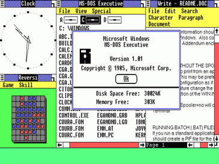
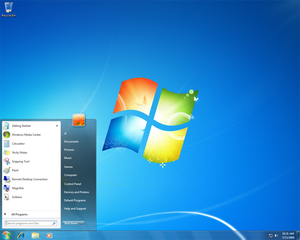
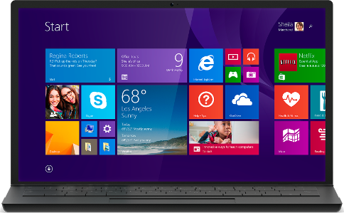
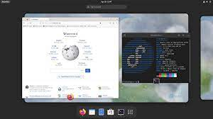

O que é um Software?
Um software é um serviço computacional utilizado para realizar ações nos sistemas de computadores. Ou seja: Um software é todo programa presente nos diversos dispositivos (computadores, celulares, televisores, entre outros). Um software pode ter varias funções: Jogos, cálculos, Criação de texto, edição de imagem, edição de vídeo, conversão de vídeo, reprodutor de multimídia, acesso á internet, etc. Resumindo, é tudo que pode ser executado no computador.
- Software de sistema;
- Software de aplicação;
- Software de programação;
- Software de segurança;
- Software de bases de dados;
- Software de redes;
- Software de educacional;
- Software de entretenimento;
- Software de gestão empresarial;
- Software de design assistido por computador(CAD).
Software de sistema
Os softwares de sistema são os responsáveis pelos sistemas operacionais de todos os dispositivos e auxiliam os usuários em seu uso, de forma visual e através de comandos. São extremamente complexos em sua construção.
Windows, Android, iOS.
Software de aplicação
O software de aplicação é criado, em regra, para executar tarefas específicas tal como o processamento de texto, reprodução de áudio. Ao contrário do software de sistema, estas tarefas não são indispensáveis ao normal funcionamento do computador e que só são executa- das a pedido do utilizador.
Chrome, calculadora, Windows Media Player, Microsoft Word, AutoCAD, Adobe Photoshop.
Software de programação
Softwares de programação são softwares que permitem que programadores criem outros programas, através do uso de linguagens de programação. Eles fornecem ferramentas e soluções para testar, compartilhar, gerenciar e até de facilitar a escrita dos códigos.
Word, Exel, Paint, Bloco de notas, calculadora.
Software de segurança
Trata-se de uma classe de sistemas que age na identificação, na prevenção e no bloqueio de possíveis invasões, a partir dos códigos maliciosos. Ainda assim, existem sistemas para prevenir os ataques ou, até mesmo, para limitá-los.
Os dispositivos de segurança mais comuns são os fusíveis e os disjuntores.
Software de bases de dados
O software de banco de dados às vezes também é conhecido como "sistema de gerenciamento de banco de dados" (DBMS). O software de banco de dados simplifica o gerenciamento de dados, permitindo que os usuários armazenem dados em um formulário estruturado e depois os acessem.
MySQL, MongoDB, PostgreSQL, SQLite, CUBRID.
Software de redes
Software de rede é um termo extremamente amplo para uma gama de softwares voltados ao design e implementação de redes modernas. Vários tipos de software de rede suportam a criação, calibração e operação de redes.
Windows 2000 Server, Novell Netware, Unix, Linux.
Software de educacional
Software educativo é um software cujo principal objetivo é o ensino ou o auto-aprendizado. O seu objetivo principal é contribuir para que o aprendiz obtenha novos conhecimentos, fazendo uso do software, tendo prazer em lidar com ele.
Software educativo de sistema tutorial; Software educativo de exercício e prática; Software educativo de simuladores e jogos e Software educativo de sistema experto.
Software de entretenimento
Software de entretenimento é qualquer software que apóie um hobby ou forneça uma forma de diversão. O software de entretenimento inclui videogames, vídeos e qualquer outro software que o usuário considere agradável.
Videogames, vídeos e qualquer outro software que o usuário considere agradável.
Software de gestão empresarial
O software de gestão empresarial ocupa uma posição central nas organizações modernas: o painel de controle que concentra todos os dados, documentos e processos do negócio. Com ele, é possível integrar todas as áreas da empresa, automatizar tarefas e acelerar as rotinas diárias, conquistando muito mais eficiência.
STRATWS One, Conta Azul, QuickBooks, Granatum, Trello, Agendor e Tiny ERP.
Software de design assistido por computador(CAD)
CAD (Computer Aided Design) ou em português, Desenho Assistido por Computador é o termo utilizado ao se referir a softwares que auxiliam na elaboração de desenhos/projetos no meio digital, através de gráficos produzidos em computadores. Popularmente conhecido e utilizados por arquitetos e engenheiros das diversas industrias presente no mercado os softwares CAD são capazes de produzir geometrias em 2D ou 3D, através das coordenadas X, Y e Z.
AutoCAD, Inventor CAM, SketchUp, SolidWorks, 3DS Max, Maya, Revit, Civil 3D.

O que é o Windows?
O Windows é um sistema operacional de interface gráfica multitarefa. Isso significa que podemos trabalhar com vários programas simultaneamente.
- 16 Bites;
- Windows 1.0;
- Windows 2.0;
- Windows 3.0;
- Windows 95;
- Windows 98;
- Windows 2000;
- Windows XP;
- Windows vista;
- Windows 7;
- Windows 8;
- Windows 10;
- Windows 11.
16 bites
Ele foi o Windows (ainda não tinha esse nome nem a interface grafica). Ele foi criado em 1981 e foi utilizado até 1983.
Windows 1.0
A primeira versão do SO foi lançada no longínquo ano de 1985 e era mais uma extensão do MS-DOS do que um software completo. Ele se caracterizava pelo modelo colorido na tela e aplicações como bloco de notas e até um Paint. Ele não permitia a sobreposição de janelas, por exemplo, e por isso todas elas ficavam expostas lado a lado.
Windows 2.0
O Windows 2.0 chegou ao mercado em dezembro de 1987 e, tanto como o seu predecessor quanto o seu sucessor, usava uma estrutura de computação em 16 bits. Ele apresentou melhorias na interface, como a possibilidade de sobrepor janelas de programas, atalhos de teclado e suporte a VGA.
 Windows 3.0
Windows 3.0
Sucessor do Windows 2.0, que trouxe poucas alterações em relação ao primeiro, o 3.0 foi lançado em 1990 com melhorias de memória. Ele também se destacou pelo visual mais limpo, melhor organização de arquivos e apresentou ao mundo o Campo Minado, que viria a ser um destaque nos computadores pré-internet.

Windows 95
Considerado um dos sistemas operacionais mais importantes da história, o Windows 95 abriu uma nova era para a Microsoft. Ele foi programado em 32 bits e trouxe melhorias que incluíam o sistema plug and play, recursos de acessibilidade e o navegador Internet Explorer. Lançado em agosto de 1995, o sistema foi o primeiro com o menu Iniciar, que permanece até hoje, e foi o responsável por ajudar o computador a se tornar um item popular nas casas das famílias do mundo todo.

Windows 98
O Windows 98 aprofundou a revolução que o seu antecessor começou. Disponibilizado em junho de 1998, ele era mais estável, tinha suporte a mais de um monitor e componentes USB, particionamento do HD, serviço Outlook de e-mail, modo de hibernação e mais. No mundo todo, ele foi o primeiro contato de muita gente com o PC, já que ainda estava em muitas máquinas mesmo após a virada do século.

Windows 2000
O Windows 2000 foi lançado em fevereiro de 2000 e consolidou o fim definitivo da nomenclatura "NT". O Windows NT, que começou a ser disponibilizado em 1993, era voltado para usuários corporativos, servidores e workstation, e não para o público geral. Por causa disso, sua menção é importante, além de ter trazido recursos importantes e novos sistemas de segurança.

Windows XP
O Windows XP foi lançado em outubro de 2001 e à época era bastante inovador, principalmente no quesito visual. Ele apostou em um menu Iniciar verde e barras azuis que se tornaram bastante populares entre os usuários. Entre as várias novidades que ele apresentou em suas versões, havia a opção de alternância de contas de usuários sem fechar arquivos abertos, suporte para DSL e wireless. Ele popularizou programas do Windows Media Player, já que CDs poderiam ser lidos pelos drives e tocados no programa. Seu wallpaper, uma fotografia de planícies na Califórnia, tornou-se uma das imagens mais famosas da era da internet.

Windows Vista
O Windows Vista teve um hiato bastante grande em relação ao anterior, se desconsiderarmos as atualizações e novas versões do XP. Ele foi lançado em novembro de 2006, apresentando uma nova estética de janelas transparentes e melhores recursos de segurança. Apesar disso, ele não foi tão bem recepcionado porque muitos usuários reclamavam que ele deixava o computador lento, o que fez muita gente continuar usando o XP por mais um bom tempo.

Windows 7
Lançado em julho de 2009, o Windows 7 foi recepcionado de maneira um pouco melhor na comparação com o Vista e melhorou tanto o esquema visual quanto o desempenho do sistema operacional. Ele também se destacou por apresentar recursos como suporte a telas touch screen e multi-touch, leitura de Blu-ray, Windows Defender, modo Windows XP e mais.
Windows 8
Apesar de também não ter sido muito popular, o Windows 8 trouxe mudanças que podem ser vistas até hoje no software da Microsoft. Ele foi lançado em outubro de 2012 e remodelou por completo a interface do sistema operacional, trazendo um novo sistema de widgets, janelas retangulares e a remoção do clássico menu iniciar, que foi bastante polêmica. Apesar disso, ele começou uma importante integração com os smartphones, que na época já estavam em alta. Ele era compatível com o Windows Phone, o sistema operacional para celulares da Microsoft, e tinha integração com vários apps mobile.
Windows 10
O software mais recente da Microsoft foi lançado em julho de 2015. Ele trouxe de volta o menu Iniciar e tem como um dos principais diferenciais o foco multimídia, que pode ser visto na integração com o Xbox, notebooks e tablets. Outra grande novidade que ele apresentou foi a assistente virtual Cortana. De acordo com o site da Net Marketshare, ele é o SO mais utilizado no mundo atualmente, estando em mais de 66% dos computadores ao redor do globo. Logo atrás está o Windows 7, que mesmo mais de dez anos após o seu lançamento ainda está presente em 17% dos PCs.
Windows 11
Nesta quinta-feira (24), a Microsoft apresentou o futuro do seu produto mais popular. Apesar de ter sido anunciado hoje, ele será lançado no final de 2021 e chegará em uma atualização gratuita para quem tiver a versão anterior. O sistema operacional terá várias novidades, incluindo um visual mais moderno, mais segurança e velocidade, bem como um novo método de organização de janelas. Além disso, pela primeira vez na história, aplicativos Android estarão presentes na Microsoft Store, o que marcará o início de uma nova era de integração entre ecossistemas de apps.

O que é o Linux?
Linux é um Sistema Operacional, assim como o Windows e o Mac OS, que possibilita a execução de programas em um computador e outros dispositivos.
- Android;
- Arch Linux;
- CentOS;
- Debian;
- Elementary OS;
- Fedora Linux;
- Gentoo Linux;
- Kali Linux;
- Linux Lite;
- Linux Mint;
- Manjaro Linux;
- MX Linux;
- openSUSE;Pop!_OS;
- Puppy Linux;
- Slackware;
- Solus;
- SUSE;
- Zorin OS.
Android
“O Android é uma pilha de software com base em Linux de código aberto criada para diversos dispositivos e fatores de forma”, explica o Google. “A fundação da plataforma Android é o kernel do Linux.
Arch Linux
O Arch Linux fornece muitos milhares de pacotes binários dentro de seus repositórios oficiais, enquanto os repositórios oficiais do Slackware são mais modestos. O Arch oferece o Arch Build System, um sistema de ports reais e também AUR, uma coleção muito grande de PKGBUILDs contribuídos pelos usuários.
CentOS
CentOS é uma distribuição de código aberto do Linux. Muitos se referem a ele como uma réplica do Red Hat Enterprise Linux (RHEL), que é considerado uma das tecnologias corporativas de TI mais usadas no mundo. O CentOS é um sistema operacional de classe empresarial amplamente suportado pela comunidade.
Debian
O Debian é um sistema operacional baseado no Linux para uma ampla variedade de dispositivos, incluindo laptops, desktops e servidores. Fornecemos uma configuração padrão razoável para cada pacote, bem como atualizações de segurança regulares durante a vida útil dos pacotes.
Elementary OS
elementary OS é uma distribuição de Linux baseada nos lançamentos do Ubuntu com suporte de longo prazo (LTS) e utiliza o ambiente de desktop Pantheon, que usa a linguagem de programação Vala. A sua interface de usuário visa ser intuitiva para novos usuários sem utilizar muitos recursos.
Fedora Linux
Fedora é um sistema operacional Linux baseado na distribuição Red Hat e que utiliza o ambiente GNOME como desktop padrão.
Gentoo Linux
Gentoo Linux é uma metadistribuição baseada no sistema gerenciador de pacotes portage. A nomenclatura usada no desenvolvimento do sistema e seus produtos é inspirada na espécie de pinguim Gentoo.
Kali Linux
Kali Linux é uma distribuição GNU/Linux baseada no Debian, considerado o sucessor do Back Track. O projeto apresenta várias melhorias, além de mais aplicativos. É voltado principalmente para auditoria e segurança de computadores em geral. É desenvolvido e mantido pela Offensive Security Ltd.
Linux Lite
O Linux Lite é uma distribuição Linux amigável para iniciantes, baseada no lançamento de suporte a longo prazo (LTS) do Ubuntu e com o desktop Xfce, voltado principalmente para aqueles que desejam mudar do Windows ou macOS para o Linux. Sim. Esse sistema tem como alvo principal os usuários do Windows.
Linux Mint
Linux Mint é uma distribuição Linux irlandesa. Possui duas versões: uma baseada em Ubuntu e outra versão baseada em Debian. Suporta muitos idiomas, incluindo a língua portuguesa, e utiliza o Cinnamon como seu principal ambiente de desktop.
Manjaro Linux
O Manjaro é uma distribuição Linux livre e de código aberto baseada no sistema operacional Arch Linux. O Manjaro se concentra na facilidade de uso e acessibilidade, e o próprio sistema foi projetado para funcionar totalmente "direto da caixa" com sua variedade de softwares pré instalados.
MX LinuxO MX Linux é um sistema operacional Linux de peso médio baseado no Debian estável usando componentes antiX centrais com software adicional criado ou empacotado pela comunidade MX. Ele foi desenvolvido como um empreendimento cooperativo entre o antiX e as comunidades do antigo MEPIS.
Open SUSE
O openSUSE é um sistema operacional Linux que se destaca pela leveza e, ao mesmo tempo, gama de ferramentas avançadas. O sistema operacional traz de fábrica programas avançados para edição de textos, planilhas eletrônicas e edição de imagens, além do navegador Mozilla Firefox e outros aplicativos.
Pop!_OS
Pop! _OS é uma distribuição Linux gratuita de código aberto, baseada no Ubuntu, e conta com um desktop GNOME personalizado. A distribuição é desenvolvida pela fabricante estadunidense de computadores Linux, chamada System76. O Pop!
Puppy Linux
Puppy Linux é uma distribuição Live CD Linux iniciada por Um cachorro francês. O Puppy é muito pequeno, e desenvolvido para ser seguro, fácil de usar e completamente customizável. Todo o sistema operacional e todos os outros aplicativos rodam da memória RAM.
Slackware
Slackware é um das distribuições do Linux mais conhecidas pela sua versatilidade. Hoje existem sistemas baseados no kernel criado por Linus Torvalds que são focados em fornecer o que há de mais novo entre a cultura de softwares livres, uso para exibição de conteúdos multimídia ou desenvolvimento de softwares.
Solus
Solus é um sistema operacional independente baseado no kernel Linux que foi criado como um sucessor do Solus OS e Evolveos, ambos criações anteriores de Ikey Doherty. Atualmente a este sistema é oferecido no modelo de lançamento contínuo e implementa um novo gerenciador de pacotes baseado em PiSi, chamado eopkg.
SUSE
SUSE Linux Enterprise Server (SLES) é uma plataforma adaptável e fácil de gerenciar que permite que desenvolvedores e administradores implantem cargas de trabalho críticas para a empresa no local, na nuvem e na borda.
Zorin
O Zorin OS 16.2 é uma distribuição baseada no Ubuntu LTS lançada em 3 versões, uma paga (Pro) com diversos aplicativos pré-instalados e quatro layouts personalizados da interface GNOME; e outras duas gratuitas, com o ambiente gráfico Gnome (Core) e a versão Lite, que traz o XFCE, sugerida para computadores com menos recursos.